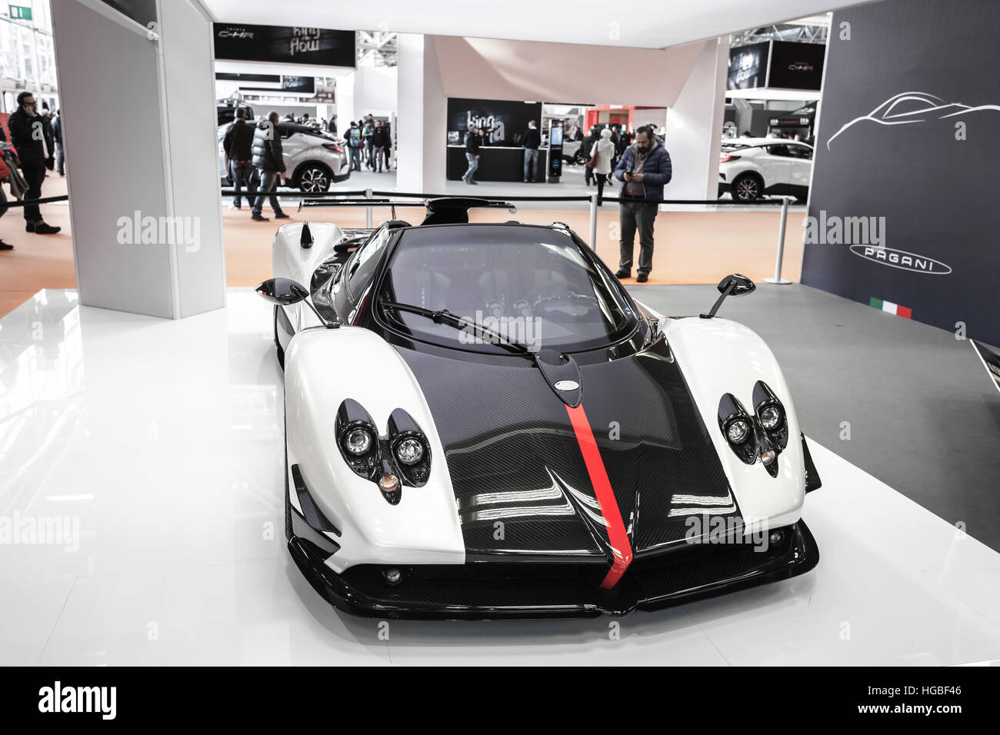
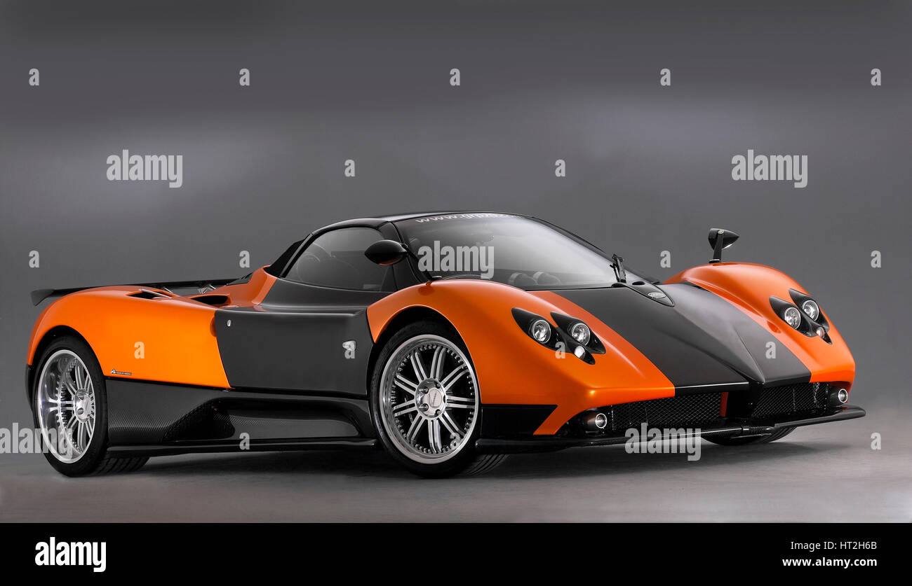

| Model | Variants | Price |
|---|---|---|
| Pagani Zonda | 140 | $2 million – $20million+ USD |
| Pagani Huayra | 330 | $3 million – $8million+ USD |
| Pagani Utopia | 229 | $2 million – $4million+ USD |
Pagani Zonda
Overview: The Pagani Zonda is a mid-engine sports car that was produced by Pagani from 1999 to 2017. It is known for its distinctive design, high performance, and use of advanced materials.
Performance: The Zonda is powered by a naturally aspirated V12 engine, delivering exceptional power and acceleration. Its lightweight construction and aerodynamic design contribute to its impressive handling and speed.
Design: The Zonda features a striking design with a focus on aerodynamics and aesthetics. Its unique shape and use of high-quality materials make it a true work of art.
 Pagani Huayra
Overview: The Pagani Huayra is a mid-engine sports car that succeeded the Zonda. It was introduced in 2011 and is known for its advanced technology, luxurious features, and exceptional performance.
Performance: The Huayra is powered by a twin-turbocharged V12 engine, providing incredible power and torque. Its advanced aerodynamics and lightweight construction contribute to its remarkable speed and handling.
Design: The Huayra features a stunning design with active aerodynamics and a focus on luxury. Its interior is crafted with the finest materials, offering a blend of comfort and performance.
Pagani Utopia
Overview: The Pagani Utopia is a mid-engine sports car that was introduced in 2020. It is known for its cutting-edge technology, luxurious features, and exceptional performance.
Performance: The Utopia is powered by a hybrid powertrain, combining a naturally aspirated V12 engine with electric motors. This setup provides incredible power and efficiency, making it one of the fastest Pagani models ever.
Design: The Utopia features a futuristic design with advanced aerodynamics and a focus on sustainability. Its interior is crafted with eco-friendly materials, offering a blend of luxury and performance.